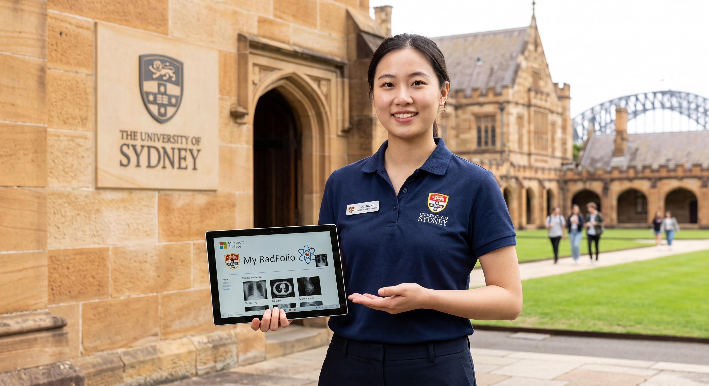

Welcome to my RadFolio!
I am a dedicated Graduate Radiographer bridging medical radiation sciences, computational technology, and digital health. Developed for prospective clinical employers and faculty assessors, this digital portfolio demonstrates my clinical capabilities, reflective learning abilities, and university graduate qualities as I transition into professional hospital practice.

Curated clinical practicum rotations across community healthcare, public tertiary emergency trauma, and specialized corporate diagnostic suites within the metropolitan network.
Managed diverse clinical presentations across the lifespan in a busy multicultural community practice. Adapted radiographic techniques, communication, and immobilization methods to care for paediatric, geriatric, and bariatric patients.
Completed intensive training in a high-volume emergency department managing acute polytrauma and complex presentations. Gained extensive hands-on experience performing independent mobile chest and musculoskeletal examinations across intensive care units and wards.
Delivered high-volume general digital radiography within a fast-paced metropolitan setting using Visage RIS/PACS. Expanded multimodal competency by actively operating specialized diagnostic imaging equipment with exacting positioning precision.
Review curated clinical achievements, empirical evidence, and self-aware limitations aligned with national threshold capabilities.
As an emerging diagnostic radiographer transitioning into a large metropolitan hospital, my commitment to professional and ethical conduct is grounded in patient advocacy, autonomy, and non-maleficence. Reinforced through my responsibilities as an Event Health Services Responder with St John Ambulance and extensive clinical rotations, I consistently prioritize patient dignity and informed consent. In acute environments, such as performing mobile examinations within intensive care and high-dependency units, I rigorously confirm patient identification using three approved identifiers and clearly articulate procedural steps, even when communicating with non-verbal or vulnerable individuals. My ethical practice is governed by the ALARA principle, ensuring exposure factors and beam collimation are rigorously optimized to minimize unnecessary dose, especially for paediatric and geriatric cohorts. Evidence supporting this capability includes consistently superior marks on clinical assessment rubrics across both public tertiary hospitals and comprehensive outpatient settings, which commend my adherence to radiation legislation, infection control protocols, and empathetic patient communication. However, an authentic self-aware limitation I recognized during early trauma placements was managing the emotional weight of acute clinical distress. Encountering severe trauma initially blurred the boundary between deep clinical empathy and technical objectivity, threatening to induce cognitive fatigue. To proactively resolve this, I engaged in structured debriefing sessions with clinical educators and implemented cognitive framing strategies to establish sustainable professional boundaries. This allows me to maintain profound compassion while preserving the clinical composure required for decisive, high-stakes decision-making. By integrating this self-awareness with my multidisciplinary background in digital health security to protect electronic medical records, I uphold the highest medico-legal and ethical standards demanded by the Medical Radiation Practice Board of Australia, ensuring patient-centred integrity in complex metropolitan clinical workflows.
Clear, empathetic communication and dynamic interprofessional collaboration are fundamental to delivering safe, high-quality patient care within high-pressure clinical environments. During my clinical placement within a busy metropolitan public hospital emergency department, I actively honed my ability to exchange vital diagnostic information swiftly under pressure. Operating amidst complex resuscitations required seamless coordination with emergency physicians, trauma nurses, and radiographers. I routinely utilized the standardized ISBAR framework to execute precise clinical handovers—a competency initially established during emergency medical responses with St John Ambulance. Evidence of this capability is demonstrated in my clinical placement evaluations during surgical theatre rotations, which commended my clear verbal closed-loop communication while operating mobile C-arm fluoroscopy, maintaining the sterile field, and anticipating surgeon projections during orthopaedic fixations. Additionally, my bilingual fluency in Mandarin and English significantly bridges communication barriers for culturally and linguistically diverse patients, facilitating voluntary informed consent and easing pre-procedural anxiety. Nevertheless, a distinct self-aware limitation in my initial clinical rotations was navigating hierarchical team dynamics. When encountering ambiguous imaging referrals that appeared misaligned with presenting clinical indications, I initially exhibited hesitancy to question senior medical officers, fearing overstepping professional boundaries. To remediate this, I actively sought mentorship and practiced structured assertion techniques, such as the two-challenge rule and graded assertiveness phrasing. This empowered me to respectfully and confidently initiate interdisciplinary dialogues to clarify clinical indications, ensuring examinations are clinically justified before radiation exposure. By balancing collegiate humility with proactive communication, I ensure departmental throughput remains efficient while collaborative patient safety remains uncompromised across multidisciplinary hospital environments.
Safe practice and continuous quality improvement are the cornerstones of my professional ethos, underpinned by a rigorous integration of medical radiation physics and digital health science. Leveraging my Master of Computing and Information Technology alongside radiography training, I approach safety and quality through both physical radiation protection and systemic data integrity. In clinical practice across metropolitan trauma and corporate imaging centres, I meticulously apply radiation protection principles, optimizing focal spot selection, filtration, and source-to-image distance to limit dose. A primary piece of academic and practical evidence demonstrating this capability is my clinical quality control audit evaluating digital mammography systems against Facility Reference Levels, where I rigorously evaluated detector homogeneity, entrance surface dose, and artifact propagation. Furthermore, my postgraduate literature review critically evaluated deep-learning generative algorithms for radiation dose reduction in Digital Subtraction Angiography, illustrating my active engagement with cutting-edge, evidence-based imaging optimization. However, a notable self-aware limitation stemming from my advanced computing background was an initial tendency toward excessive computational over-analysis during high-volume clinical shifts. In fast-paced general radiography, I occasionally spent disproportionate time scrutinizing post-processing lookup tables and detector exposure index variations at the console, which momentarily risked compromising patient flow. Recognizing that perfectionism must not impede clinical throughput, I instituted a pragmatic workflow routine: prioritizing rapid anatomical adequacy, ALARA collimation, and clinical safety checks before detailed digital evaluation. By aligning technical precision with rapid, real-world clinical decision-making, I ensure diagnostic examinations adhere to the highest standards of safety, reproducibility, and evidence-based governance within demanding hospital settings.
Reflective practice serves as the catalyst for my continuous clinical evolution, transforming everyday diagnostic encounters into systematic pathways for professional development. I embed established pedagogical frameworks, specifically Gibbs' Reflective Cycle, to critically deconstruct complex clinical events, identify underlying learning needs, and adapt my practical methodologies. Tangible evidence of this skill is demonstrated in my comprehensive academic case study analyzing mobile chest radiography for a critically ill paediatric patient presenting with suspected pneumothorax in an intensive care setting. Utilizing the PACEMAN critique criteria, I systematically dissected my radiographic positioning, exposure factor selection, anatomical inclusion, and immobilization techniques, while concurrently reflecting on the interpersonal communication required to reassure anxious family members. This structured reflection directly enabled me to formulate actionable strategies for subsequent complex ward imaging. Nonetheless, an inherent limitation I identified in my early reflective writing was a pronounced bias toward disproportionate self-criticism. I initially fixated almost exclusively on minor technical positioning flaws, overlooking positive clinical achievements such as effective rapport building and excellent radiation safety compliance. This negative cognitive skew hindered constructive confidence building. To address this limitation, I actively solicited structured external feedback from clinical educators and adopted a balanced reflective model that intentionally pairs technical areas for refinement with validated professional strengths. This recalibration transformed my reflections into a resilient, constructive practice. By routinely integrating systematic reflection into daily clinical workflows, I proactively adapt to unfamiliar clinical presentations, maintain high diagnostic standards, and continuously progress toward clinical excellence within a dynamic hospital team.
Independent learning and technical synthesis represent indispensable capabilities that enable me to navigate the rapidly shifting technological landscape of diagnostic radiography. Across my clinical rotations spanning diverse public hospitals and specialized corporate practices, I took proactive initiative to independently master multiple proprietary digital radiography platforms, including Philips Digital Diagnost, Fujifilm FDR Smart X, and Siemens Axiom systems. Drawing upon my foundational Master's degree in Computing and Information Technology, I independently examined technical service manuals, DICOM header structures, and vendor-specific post-processing algorithms outside clinical hours. This self-directed study accelerated my operational competence, enabling me to transition seamlessly between diverse modalities—including mobile digital units, Carestream dental CBCT, and GE Lunar bone mineral densitometry—and troubleshoot minor network PACS interface errors without supervisory delays. Documented evidence includes clinical competency logs commending my rapid operational independence and versatile technical execution across disparate clinical software architectures. However, an authentic self-aware limitation arising from this technological fluency was an initial inclination to over-focus on console settings during complex examinations. Early in my training, my drive to master unfamiliar software interfaces occasionally led to brief periods of console immersion, inadvertently detracting from continuous visual observation and verbal connection with the patient on the table. Recognizing this pitfall, I established a deliberate cognitive routine: completing all primary patient positioning, comfort verifications, and safety instructions before engaging deeply with digital consoles. This self-regulated habit ensures that technical proficiency actively supports, rather than overshadows, compassionate patient-centred care during high-throughput clinical operations.
Developing sound professional judgment and clinical reasoning under high-stress conditions has been central to my professional growth as an acute-care radiographer. High-acuity clinical environments demand the instantaneous synthesis of clinical history, physical trauma presentations, and radiation physics to execute modified imaging examinations safely. During my placement within a high-volume metropolitan emergency department, I regularly performed dynamic risk assessments for polytrauma patients presenting with severe cervical spine restrictions, multiple fractures, and unstable hemodynamics. Rather than attempting textbook positioning, I exercised autonomous clinical judgment to adapt beam angulations and horizontal-beam projections, capturing diagnostic-quality cross-table views while avoiding patient discomfort or secondary injury. Documented evidence supporting this learning skill includes supervisor assessments reflecting my capability to independently conduct high-priority mobile examinations across intensive care units, safely navigating ventilators, arterial lines, and space constraints. Despite these successes, a notable limitation I encountered during early trauma resuscitations was situational cognitive overload. The simultaneous sensory inputs of alarms, urgent clinical directives, and severe patient pain initially triggered physiological stress, which threatened to induce tunnel vision and slow my exposure factor selection. To systematically mitigate this limitation, I leveraged crisis-resource management techniques acquired as a St John Ambulance Responder Volunteer. I implemented structured mental rehearsal before entering trauma bays and utilized tactical breathing to maintain physiological composure. This deliberate self-regulation allows me to preserve acute situational awareness, prioritize radiation safety, and make decisive, evidence-based imaging choices amidst the unpredictable demands of a major metropolitan trauma center.
> Click 'DECRYPT ANALYSIS' to read full reflections...
Synthesizing clinical insights across speech pathology, physiotherapy, and surgery to innovate adapted positioning setups and non-standard fluoroscopic solutions...
Exercising confident, ethical leadership and proactive collaboration across multidisciplinary teams, honed through emergency medical response...
Championing equitable, culturally safe patient care and Indigenous health perspectives, supported by bilingual communication and cultural humility...
PRIVACY PROTOCOL ACTIVE: Direct personal contact details and identifiable institutional references are omitted from this public domain in strict compliance with University and MRPBA privacy protocols. Prospective clinical assessors may submit a verified request below to receive the complete unredacted Curriculum Vitae.